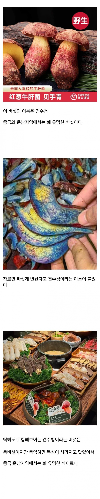
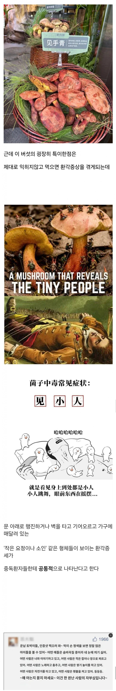
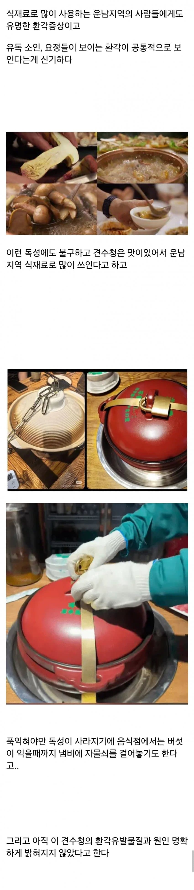
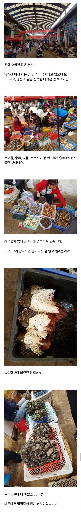
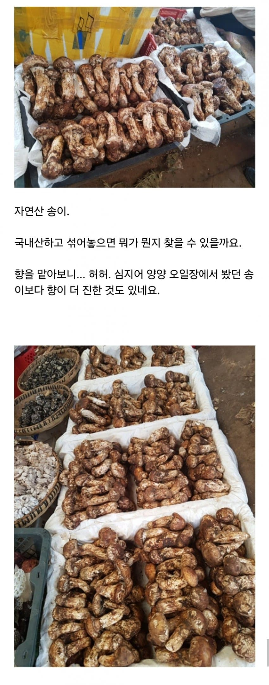
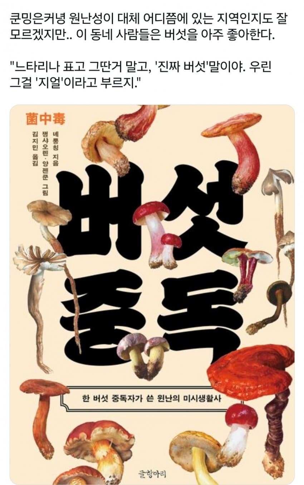

견수청을 잘못 먹고 환각증상에 시달리는 환자의 모습
중화 삼천년 역사 동안 운남 지방은 독버섯 잘못 줏어먹다 탈 나는 사람들이 워낙 많았기 때문에
운남 지역 병원은 독버섯 중독 증상 치료에는 아주 도가 텄다고함...



"느타리 표고? 우린 그건 버섯으로도 안 친다."
- 운남 사람들



견수청을 잘못 먹고 환각증상에 시달리는 환자의 모습
중화 삼천년 역사 동안 운남 지방은 독버섯 잘못 줏어먹다 탈 나는 사람들이 워낙 많았기 때문에
운남 지역 병원은 독버섯 중독 증상 치료에는 아주 도가 텄다고함...



"느타리 표고? 우린 그건 버섯으로도 안 친다."
- 운남 사람들
버섯때문에 가보고 싶단 말이야 운남은
자백제로 쓸수도 있겠네
야수교놈들!!
야수궁임
야전수송교육대놈들..!!
ㅋㅋㅋㅋㅋ 야수교
저 OO 은 영지버섯 아님?? 근데 왜 19금 처리함??
헤이헤이헤이
운지버섯
아니 운지버섯이 잘못된표현도아니고
오히려 저렇게 적으니 더 이상함
그렇노? 사투리도 잘못된 표현이 아니니 써도 상관없노?
알빠노
푹 익히면 먹을 수 있다는건 어떻게 알게 된걸까...?
환각보다가 불끄는걸 깜빡함
먹었는데 환각만 보이고 죽진 않네???
일단 구워보고 삶아보고 쪄보고 하면서 어??
푹익히니까 환각 사라지네 ㅎㅎ
와 자연산송이 배터지게 먹고싶네
왜 자연산이라 생각하지 ㅋㅋㅋ 상대는 중국이다
송이가 양식이 된다고? 어딨냐 당장내놓으셈
합성송이향 뿌린 플라스틱 ㅋㅋ
양식당 가보셈
다른건 몰라도 송이는 ㅋㅋ
열대기후가 시작하는 위도인데 해발고도는 높아서 사시사철 봄같은 날씨인데다가, 습도도 안정적이라서 버섯이 나고 자라기에 천혜의 환경이긴 함. 중국에서 보이차와 더불어 버섯을 최고로 알아주는 동네가 운남성임..
도로헤도로
20분 넘게 익히게 되면 특유의 향미나 식감이 사라져 버려, 중독의 위험성을 감수하고 10분~12분 정도 빠르게 기름에 튀겨내듯이 볶아내어 먹는 용자들도 있다. 그렇지만 야생버섯에 취약한 비현지인이 그러다가는 응급실에 직방으로 실려가는 길이니 맛을 포기하고서라도 충분히 익혀 먹어야 된다.
운남인들의 버섯사랑은 못말려
나라면 할수있다...! 나라면...!
운남 오독궁은 유서깊은 문파지. ㅇㅇ
엘리아스로 가는법 ㅇㄷ
사람이 언제 죽는다고 생각하나?
환각버섯스프를 먹었을때?
버섯 맛있긴 한데 좀 과대평가됨
무협지에서 오독문이 운남에 있는 이유가 있었네
운남버섯전골집가면 진짜 뚜껑에 손만대도 막소리치더라 시계놓고간거 알람울릴때까지는 손도못대게함 그러고나서 익으면 국물떠서 투명한밀폐용기 담더니 내위챗아이디 적어서 붙여가지고 갖고감
존나철저하네 ㅋㅋㅋ
존나 철저하게 관리하네ㅋㅋㅋ
중국 생각보다 식자재 정부관리 존나빡셈. 그럼에도 목숨걸고 장난치는 ㅂㅅ들이 많아서 문제
환각만 보는게 아니고 구토 복통 설사 어지럼증 기억상실 이런 것도 일어남
ㅋㅋㅋㅋ 쿤밍 저 버섯 샤브샤브 진짜 개맛었있음
국내 샤브 코스랑 비슷한데, 처음에 저 걸리버 버섯 포함해서 버섯등을 육수에 다 때려 넣고 냄비를 자물쇠로 잠가버림ㅋㅋ 타이머 주고 시간 다 되면 서버가 와서 열어주는데, 혹여나 중독 걱정 때문인지 건강검진 소변 샘플처럼 택까지 붙여서 육수 한 컵 가져감ㅋㅋㅋ
어케여행감? 패키지가 아니라 걍 베낭여행같이 간겨?
출장 갔다가 잠깐 들렀으욤.
바빠서 유명 관광지는 한 군데도 못 가봄 ㅋㅋ
개인적으로 중국은 언어의 장벽을 어찌못하면,
배낭여행은 좀 빡셀 듯합니다.
DiDi나 알리페이 같은 앱이 아무리 잘돼 있어도 언어의 벽이 생각보다 너무 큼
중국은 그냥 패키지가 최고인 듯!!
ㅇㅇ 차마고도 보고싶어서 곤명 패키지로 간적 있는데 버섯전골이나 저런 버섯시장은 못봤어서... 먹어보고싶어서 어케갔나 궁금해서 물어봄 ㅠ
ㄹㅇ 그때 패키지로 갔을때도 물좀 더먹고싶어서 water해도 그게 무슨 단어인줄조차 모르더라. 중국어 모르면 자유여행으론 못오겠다 확신했음ㅋㅌ
버섯갤러리 사람들은 저기 여러번 갔을까
걍 씹고 뱉으면 어떨까 딱 향만 즐기는 거지
수천년 생체데이터
걸리버 여행기 작가가 저거먹고 소설쓴듯
독성이 그리 심하진 않다면 한번 먹어볼 만한데...
운남성 여행 진짜 추천함. 나는 리장 트레킹 다녀왔는데 나중에 여유되면 음식만 먹으러 가고 싶음
날씨도 4계절 내내 선선하고 음식도 맛있고 물가도 싸고 추천함
미시생활사 어흐;;